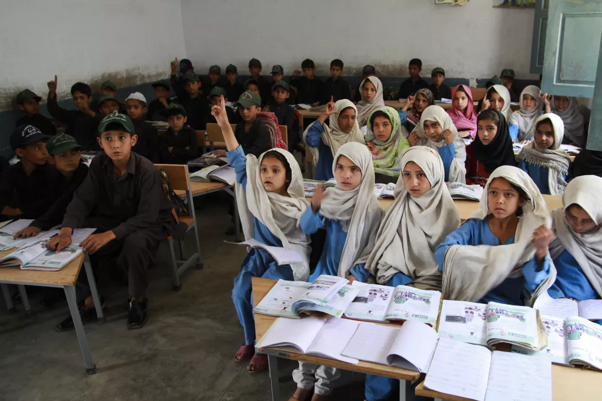
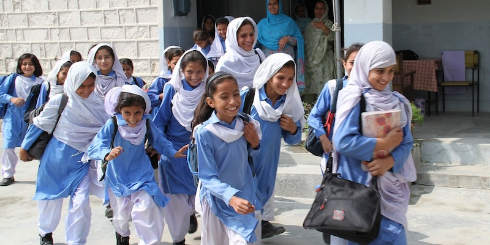

Permasalahan kesenjangan pendidikan tidak hanya terjadi di lingkungan sekitar saya, tetapi juga dialami oleh berbagai negara lain, salah satunya Pakistan. Hingga saat ini, Pakistan masih menghadapi kesulitan dalam pemerataan akses pendidikan, dengan jutaan anak tidak dapat bersekolah. Sebagian besar anak yang tidak mendapatkan kesempatan pendidikan tersebut adalah perempuan. Hal ini menunjukkan bahwa kesenjangan pendidikan merupakan permasalahan global yang masih membutuhkan perhatian banyak negara.